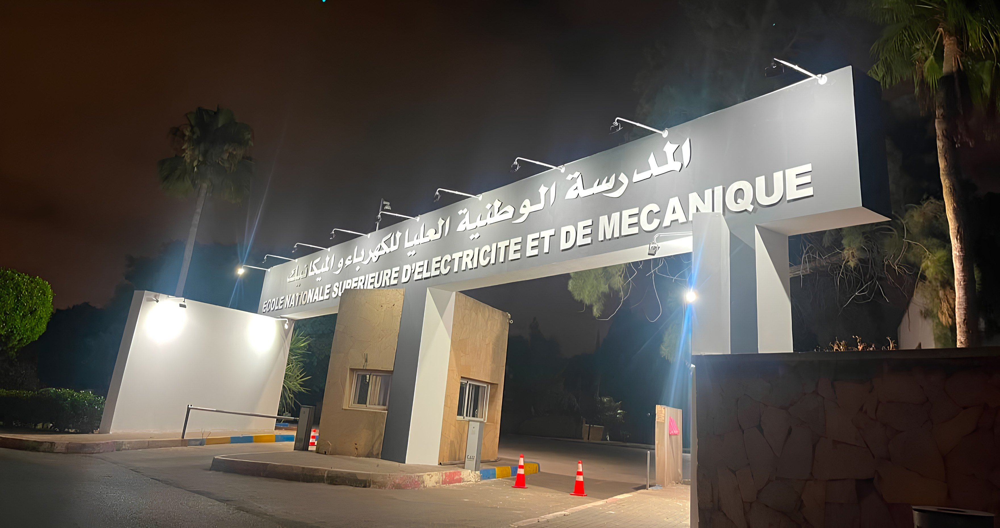
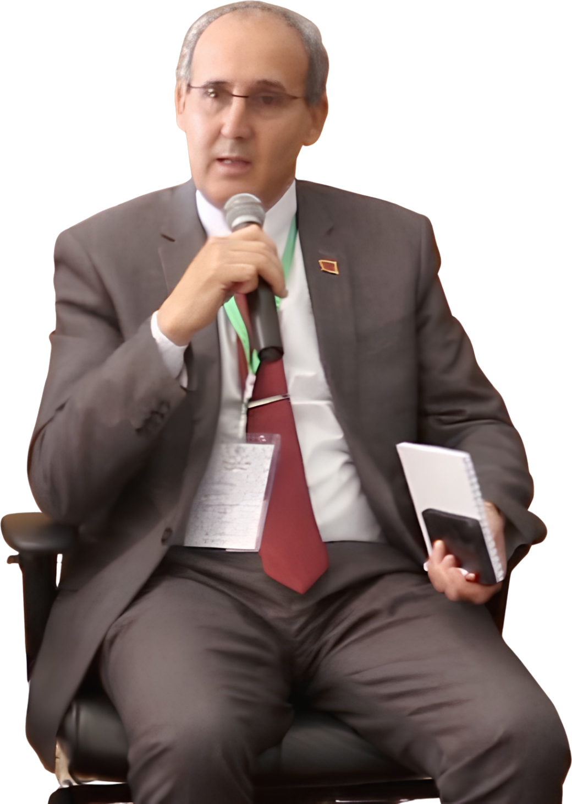

Organisation sportive étudiante officielle
ENSEM SPORT
Sport, leadership, innovation et esprit d'équipe au cœur de l'École Nationale Supérieure d'Électricité et de Mécanique.
Notre signature
Force collective
Ambition partagée
Ensemble,plus loin.
ENSEM Sport rassemble les étudiants autour de la compétition, de la créativité et du dépassement de soi. Chaque événement devient un terrain d'apprentissage, de rencontre et de fierté collective.
Nos terrains
d'expression
Des rendez-vous conçus par les étudiants, pour les étudiants : sport, culture, média, gaming et vie de campus.

Une école d'excellence au service de l'ingénierie
Fondée avec l'ambition de former les ingénieurs qui accompagneront le développement industriel du Royaume, l'École Nationale Supérieure d'Électricité et de Mécanique (ENSEM), établissement de l'Université Hassan II de Casablanca, s'impose aujourd'hui comme l'une des institutions de référence de l'enseignement supérieur en ingénierie au Maroc.
Depuis plusieurs décennies, l'ENSEM forme des ingénieurs capables d'évoluer dans un environnement technologique en constante mutation. Grâce à une pédagogie exigeante, associant excellence académique, recherche scientifique, innovation et immersion professionnelle, l'école prépare des profils hautement qualifiés répondant aux besoins des secteurs industriels stratégiques aux niveaux national et international.
L'ENSEM se distingue également par la richesse de son écosystème. Ses partenariats avec les entreprises, les institutions publiques, les laboratoires de recherche et les universités internationales favorisent le transfert de connaissances, l'ouverture sur le monde professionnel et le développement de projets à forte valeur ajoutée.
Convaincue que la réussite d'un ingénieur dépasse les seules compétences techniques, l'ENSEM encourage une vie étudiante dynamique où le sport, la culture, l'entrepreneuriat, l'innovation et l'engagement associatif constituent des piliers essentiels de la formation. Cette approche contribue à façonner des ingénieurs responsables, créatifs, ouverts sur le monde et capables de porter les ambitions du Maroc de demain.
Découvrir notre mission →
La vision du Directeur
Sous l'impulsion du Professeur Ahmed Naddami, l'ENSEM poursuit une vision ambitieuse visant à renforcer son positionnement parmi les écoles d'ingénieurs de référence au Maroc et à l'international. Cette dynamique repose sur l'excellence académique, l'innovation, la recherche scientifique, le développement de partenariats stratégiques avec le monde socio-économique et l'ouverture sur les enjeux technologiques de demain.
Cette vision accorde également une place essentielle à la vie estudiantine et au développement parascolaire. Convaincue que la formation d'un ingénieur ne se limite pas aux compétences techniques, la direction encourage les initiatives portées par les clubs et associations étudiantes dans les domaines du sport, de l'entrepreneuriat, de la culture, de l'innovation et de l'engagement citoyen. Ces activités constituent un véritable levier de développement du leadership, de l'esprit d'équipe, de la gestion de projets et du rayonnement de l'ENSEM, contribuant ainsi à former des ingénieurs compétents, responsables et capables de relever les défis du monde professionnel.
Vision du club
ENSEM Sport ambitionne de devenir une référence nationale parmi les clubs des grandes écoles d'ingénieurs en plaçant l'excellence, l'innovation et l'engagement étudiant au cœur de chacune de ses initiatives. Le club aspire à créer une communauté unie où le sport constitue un véritable vecteur de leadership, de dépassement de soi et de cohésion.
À travers l'organisation d'événements d'envergure, le développement de projets innovants, la professionnalisation de sa gestion et le renforcement de partenariats durables avec les acteurs institutionnels et socio-économiques, ENSEM Sport œuvre à promouvoir l'image et le rayonnement de l'ENSEM bien au-delà du campus. Sa vision est de former des étudiants capables d'allier excellence académique, compétences humaines et esprit d'initiative, tout en faisant du club un modèle d'organisation, d'impact et d'inspiration au sein de l'enseignement supérieur marocain.